Bayesian Analysis #1: Concepts
NRES 746
Fall 2025
click here for the companion R script for this lecture.
In the previous two lectures, discussed model-based inference using custom likelihood functions in a frequentist framework. Specifically, we constructed likelihood functions with one or more free parameters and then used numerical optimization techniques to find the maximum-likelihood estimate (MLE).
We quantified parameter uncertainty by relying on the asymptotic normality property of ML estimators, and by leaning on Wilks’ theorem, which allows us to treat the deviance statistic (-2 * log likelihood ratio) as Chi-squared distributed under the null hypothesis.
Regardless of the mathematical details, the key idea was that the curvature of the likelihood surface in the vicinity of the MLE (e.g., the likelihood profile) tells us something about how certain we are about our ML estimates.
Today we will start discussing Bayesian inference, which is less of a departure from these previous ideas than you might think.
Bayesian inference also requires us to develop likelihood functions that formalize our ideas about how our data were generated.
Bayesian methods also use the curvature of the likelihood surface to make inference about parameter uncertainty. The difference is that we are no longer interested in the maximum likelihood estimate (MLE) or the asymptotic properties of maximum likelihood estimators. Instead, we’re interested in using the likelihood function to update our degree of belief about our parameter values. Effectively, we want to obtain a probability distribution (called the joint posterior) that reflects our updated beliefs about the plausibility of any given set of parameters after we observe the data.
Remember, Bayesian inference allows us to represent parameter uncertainty as a probability distribution. We no longer need to think of our parameters as fixed but unknown quantities with no inherent uncertainty- we can now express our uncertainty in the language of probability.
Play with binomial/beta (conjugate prior)
Estimating the probability of an event using a binomial distribution provides a good entry point to Bayesian statistics!
Let’s imagine we we want to estimate p (the probability of an event occurring) based on the success rate of a fixed number of trials N. For now, we will assume we have no prior information about p.
Set the prior
To set the prior, let’s assume p can take any value between 0 and 1 with equal probability:
\[p \sim Uniform(0,1)\] This leads to a simple but strange looking probability density function:
\[f(p) = \begin{cases} 0 & \text{if } p < 0 \\ 1 & \text{if } 0 \le p \le 1 \\ 0 & \text{if } p > 1 \\ \end{cases}\]
Does it make sense that this distribution is often used in Bayesian analyses to represent the lack of any prior knowledge about a parameter?
An alternative way to specify this same uniform (flat) prior is to use the beta distribution, with both parameters of the distribution (\(\alpha\) and \(\beta\)) set to 1:
\[p \sim Beta(1,1)\]
\[f(p) = \frac{p^{\alpha-1}(1-p)^{\beta-1}}{B(\alpha,\beta)}\],
where \(B(\alpha,\beta)=\frac{\Gamma(\alpha)\Gamma(\beta)}{\Gamma(\alpha+\beta)}\)
# Bayesian analysis example using Binomial distribution -----------------------
# first visualize the "prior" for the probability *p* as a uniform distribution
ggplot() +
scale_x_continuous(limits=c(0,1)) +
scale_y_continuous(limits=c(0,1.5)) +
stat_function(fun=dbeta,args = list(shape1 = 1, shape2 = 1),lwd=2,col=gray(.4)) +
labs(x="parameter \"p\"",y="probability") +
theme_classic()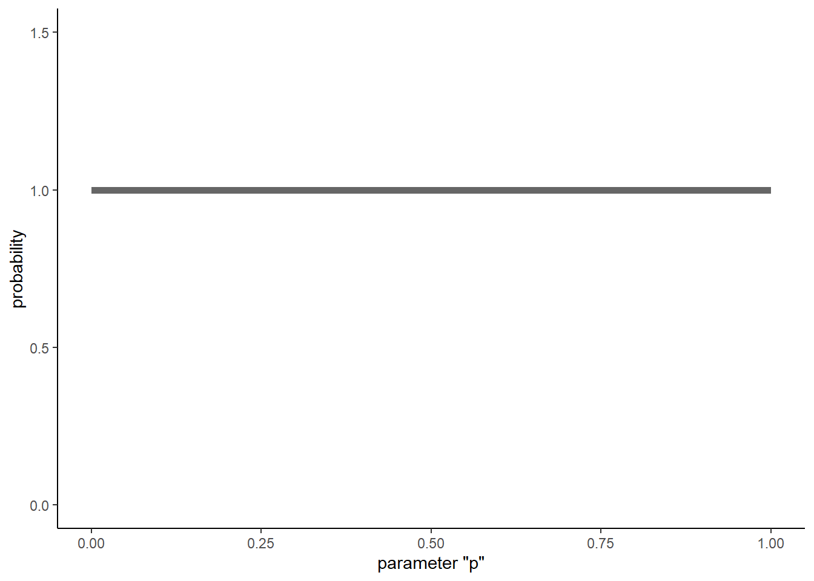
Conjugate prior
Why choose the beta distribution here? The answer is that the beta distribution is the conjugate prior for the p parameter in the binomial distribution. This makes Bayesian estimation easy and straightforward, as we will see! See if you can see the mathematical similarity with the Binomial distribution:
\[k ~ Bin(N,p)\] \[P(k) = {N \choose k}p^k(1-p)^{N-k}\]
Definition: conjugate prior
A conjugate prior is a probability distribution for a parameter that takes the same form as the data-generating model. An important consequence of this is that prior and the posterior distribution can be represented with the same family of probability distributions (e.g., the prior and the posterior are both beta distributions).
Worked example
Let’s work through an example. Take the same frog-call survey we have worked with before (a simple problem with binomial data): after visiting an occupied pond 10 times, we detected the frog (heard its call) 3 times out of 10 total visits (N=10, k=3). We are interested in estimating the detection probability.
We know how to express the likelihood of the data:
\[\mathcal{L}(p) = {10 \choose 3}p^3(1-p)^{7}\]
So now we have both a prior distribution for our parameter of interest (uniform from 0 to 1), as well as a likelihood surface (evaluating \(\mathcal{L}(p)\) from p = 0 to 1).
# frog call example: --------------
# imagine we detected the frog in 3 of 10 visits to a known-occupied wetland
# visualize the data likelihood alongside the prior probability
# recall that the likelihood surface is not a probability distribution (thus, the 2 y axes)
lik = function(p) dbinom(3,10,p)
ggplot() +
xlim(0,1) + ylim(0,2) +
stat_function(fun=dbeta,args = list(shape1 = 1, shape2 = 1),lwd=1.5,col=gray(.4)) +
stat_function(fun=lik,lwd=1.5,col="darkorange") +
labs(x="parameter \"p\"",y="probability/likelihood") +
theme_classic()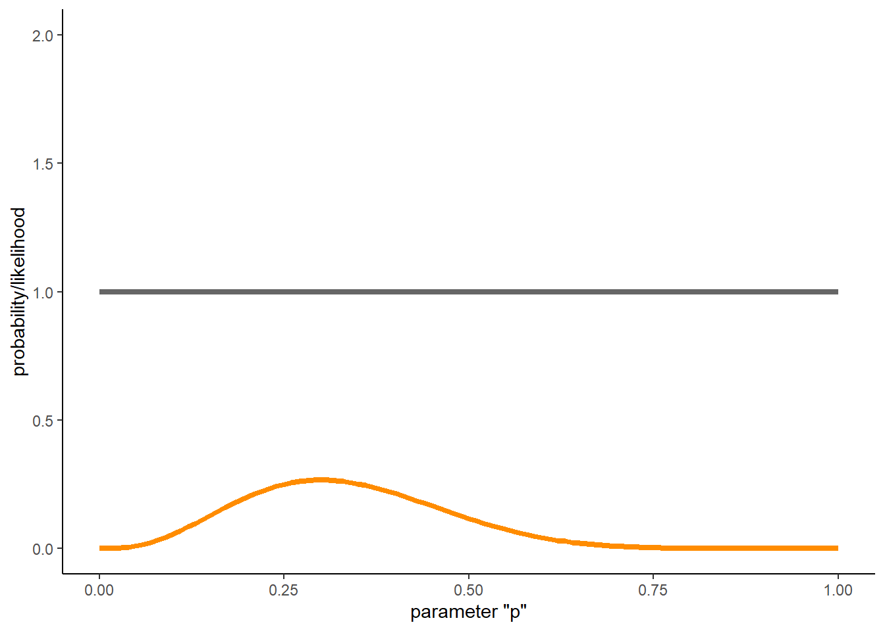
Recall that the likelihood curve is NOT a probability distribution. It does not sum to 1- as you might be able to tell from the above figure.
In Bayesian analyses, we translate the likelihood to a probability distribution using Bayes rule!!
\(P(\theta|D) = \frac{P(D|\theta)\cdot P(\theta))}{P(D)}\)
The \(P(D|\theta)\) term is the likelihood curve…
The \(P(\theta)\) term is the prior distribution
What is the marginal likelihood, or the unconditional probability of the data (\(P(D)\))?
Well, by the law of total probability, it’s the integral of the numerator (likelihood weighted by the prior) across all possible parameter values:
\[P(D) = \int{P(D|\theta)\cdot P(\theta) \;d\theta}\]
This evaluates to a single number (also known as the “evidence” or “marginal likelihood”).
In practical terms, you can think of the denominator, \(P(D)\), can be seen as a normalizing constant that effectively converts the weighted likelihood in the numerator \(P(D|\theta)\cdot P(\theta))\) into a true probability distribution.
As always, let’s start by doing it by brute force!!
# Brute-force Bayes ----------------------------
# prior across parameter space
prior <- function(p) dbeta(p,1,1) # flat prior
## Numerator for Bayes rule: weight the data likelihood by the prior
numer <- function(p) lik(p)*prior(p) # Numerator for Bayes rule
## Denominator for Bayes rule: compute normalization constant
marg_lik <- function() integrate(numer,0,1)$value # marginal likelihood is a single constant number: the sum of the weighted likelihoods!
## Posterior (numerator/denominator)
posterior <- function(p) numer(p)/marg_lik() # this is Bayes' rule!
## Plot it out!
ggplot() +
xlim(0,1) +
stat_function(fun=prior,lwd=1.5,col=gray(.4)) +
stat_function(fun=lik,lwd=1.5,col="darkorange") +
stat_function(fun=posterior,lwd=1.5,col="darkgreen") +
labs(x="parameter \"p\"",y="probability/likelihood") +
theme_classic()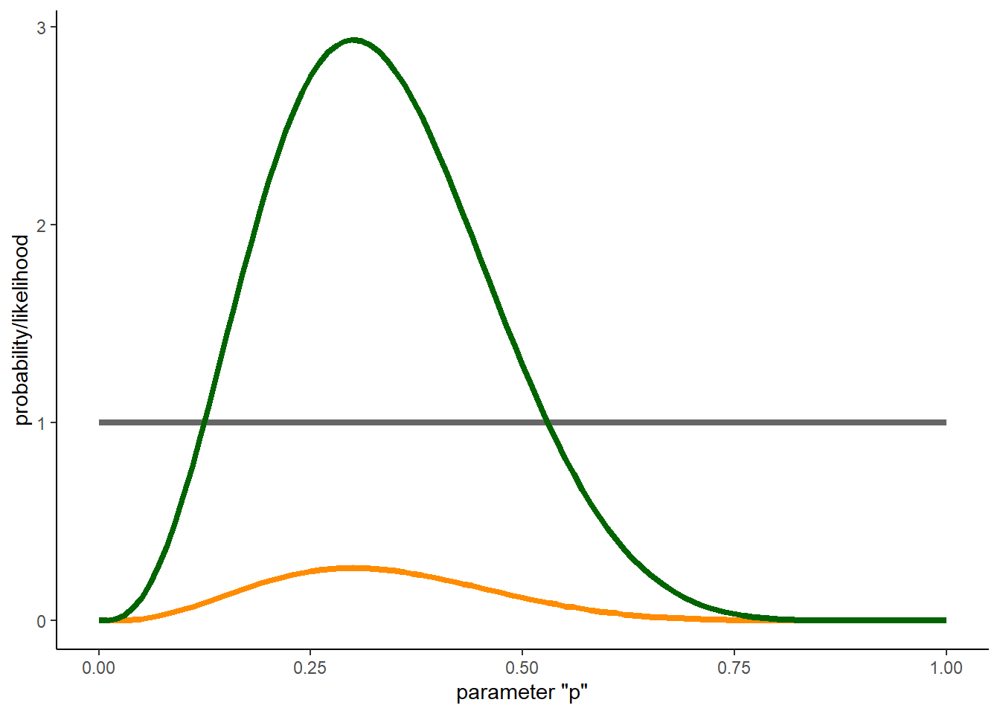
Notice that the shape of the posterior distribution looks a lot like the shape of the likelihood surface. What this says to us is that the posterior distribution is informed much more by the data than by the prior. This is nearly always the case when using a uniform prior.
What if we have a more informative prior?
# Try an informative prior! -------------
prior <- function(p) dbeta(p,15,5) # more informative prior
ggplot() +
xlim(0,1) +
stat_function(fun=prior,lwd=1.5,col=gray(.4)) +
stat_function(fun=lik,lwd=1.5,col="darkorange") +
stat_function(fun=posterior,lwd=1.5,col="darkgreen") +
labs(x="parameter \"p\"",y="probability/likelihood") +
theme_classic()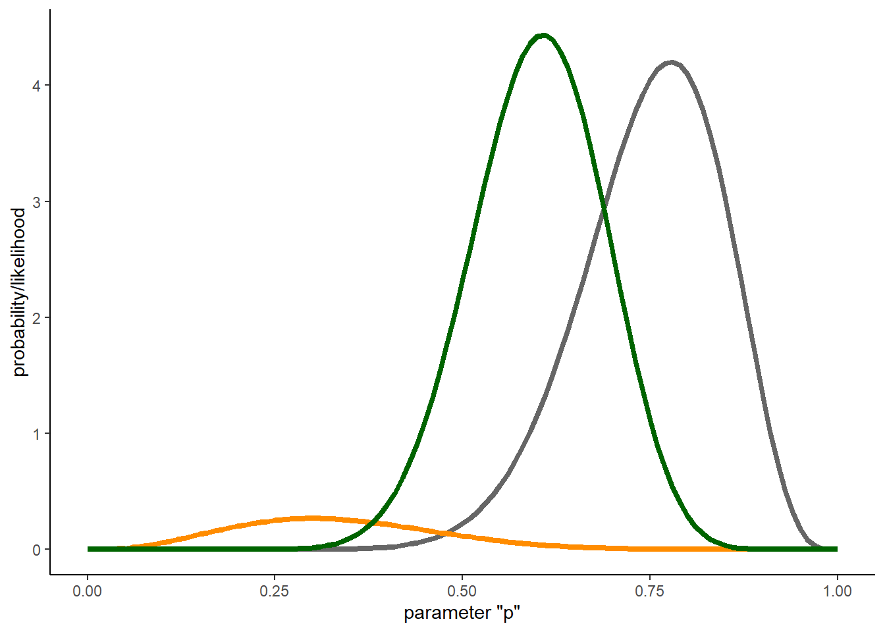
What about if we have more data? Let’s imagine we visited 10 occupied ponds and observed the following data:
3, 1, 6, 2, 3, 2, 6, 1, 3, 3
# Collect more data and try again... -----------
dat <- c(3, 1, 6, 2, 3, 2, 6, 1, 3, 3)
lik = function(p) sapply(p, function(t) prod(dbinom(dat,10,t)) ) # vectorized with sapply
ggplot() +
xlim(0,1) +
stat_function(fun=prior,lwd=1.5,col=gray(.4)) +
# stat_function(fun=lik,lwd=1.5,col="darkorange") + # likelihood is too small to show up
stat_function(fun=posterior,lwd=1.5,col="darkgreen") +
labs(x="parameter \"p\"",y="probability/likelihood") +
theme_classic()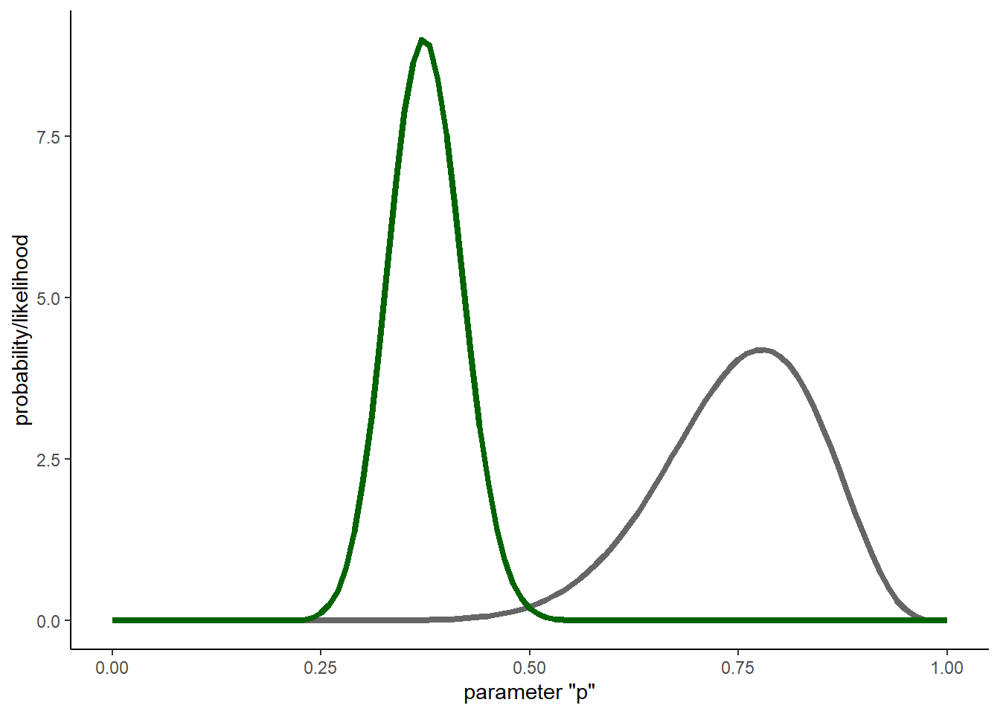
What about a super informative prior??
prior <- function(p) dbeta(p,150,50) # super informative prior
ggplot() +
xlim(0,1) +
stat_function(fun=prior,lwd=1.5,col=gray(.4)) +
stat_function(fun=posterior,lwd=1.5,col="darkgreen") +
labs(x="parameter \"p\"",y="probability/likelihood") +
theme_classic()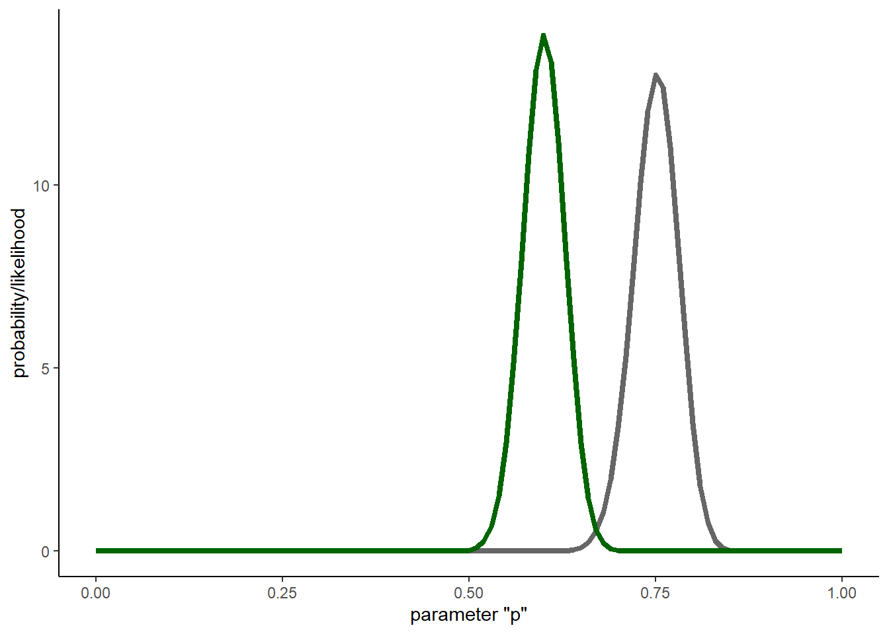
Okay, now let’s do it the more mathematically elegant way! When we work with a conjugate prior, the updating process is easy. The posterior distribution for the p term in the above example can be computed by:
\(p \sim Beta(prior+k,prior+(N-k))\)
Let’s do the same thing, now using the conjugate prior method…
## Conjugate priors ---------------------------
# Do it again- this time with conjugate priors...
ggplot() +
xlim(0,1) +
stat_function(fun=dbeta,args = list(shape1 = 1, shape2 = 1),lwd=1.5,col=gray(.4)) + # PRIOR
stat_function(fun=dbeta,args = list(shape1 = 1+3, shape2 = 1+(10-3)),lwd=1.5,col="darkgreen") + # POSTERIOR (after observing 3 successes out of 10)
labs(x="parameter \"p\"",y="probability/likelihood") +
theme_classic()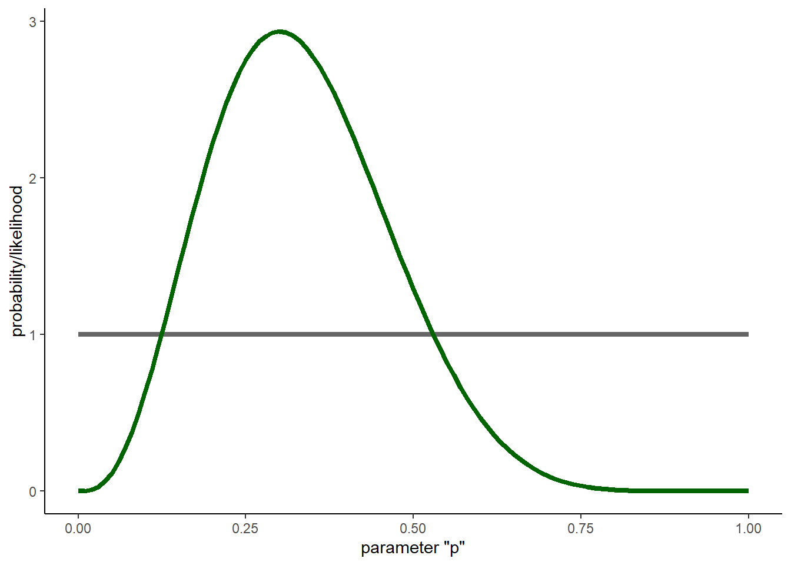
And again, this time with an informative prior!
# With informative prior...
ggplot() +
xlim(0,1) +
stat_function(fun=dbeta,args = list(shape1 = 15, shape2 = 5),lwd=1.5,col=gray(.4)) + # PRIOR
stat_function(fun=dbeta,args = list(shape1 = 15+3, shape2 = 5+(10-3)),lwd=1.5,col="darkgreen") + # POSTERIOR (after observing 3 successes out of 10)
labs(x="parameter \"p\"",y="probability/likelihood") +
theme_classic()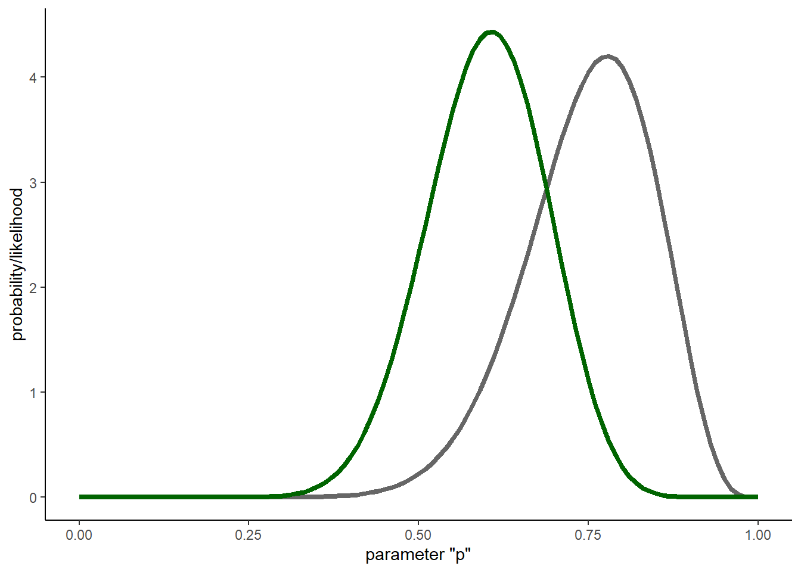
graphics.off()And the super informative prior??
# And with super informative prior...
ggplot() +
xlim(0,1) +
stat_function(fun=dbeta,args = list(shape1 = 150, shape2 = 50),lwd=1.5,col=gray(.4)) + # PRIOR
stat_function(fun=dbeta,args = list(shape1 = 150+3, shape2 = 50+(10-3)),lwd=1.5,col="darkgreen") + # POSTERIOR (after observing 3 successes out of 10)
labs(x="parameter \"p\"",y="probability/likelihood") +
theme_classic()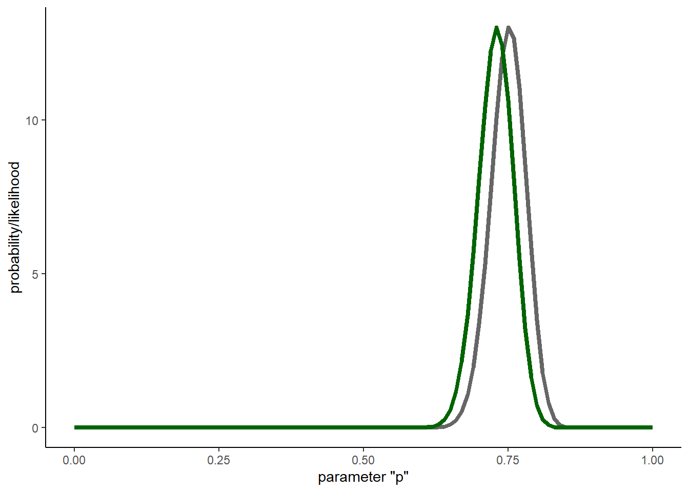
Bayesian point estimate
One of the differences between the frequentist and the Bayesian paradigm (although both use the likelihood function as a way to summarize the information content of the data) is that the point estimate is not usually the maximum (mode) of the posterior distribution. Instead, our point estimate is usually the mean (expected value) or the median of the posterior distribution for our parameter.
Imagine you had a skewed posterior distribution that looked something like this (this is actually a lognormal distribution):
## Bayesian point estimate -----------------------
# Example: bayesian point estimates can differ from MLE
ggplot() +
xlim(0,1) +
stat_function(fun=dbeta,args = list(shape1 = 0.5+1, shape2 = 0.5+2),lwd=1.5,col="darkgreen") + # skewed posterior
labs(x="parameter",y="probability/likelihood") +
theme_classic()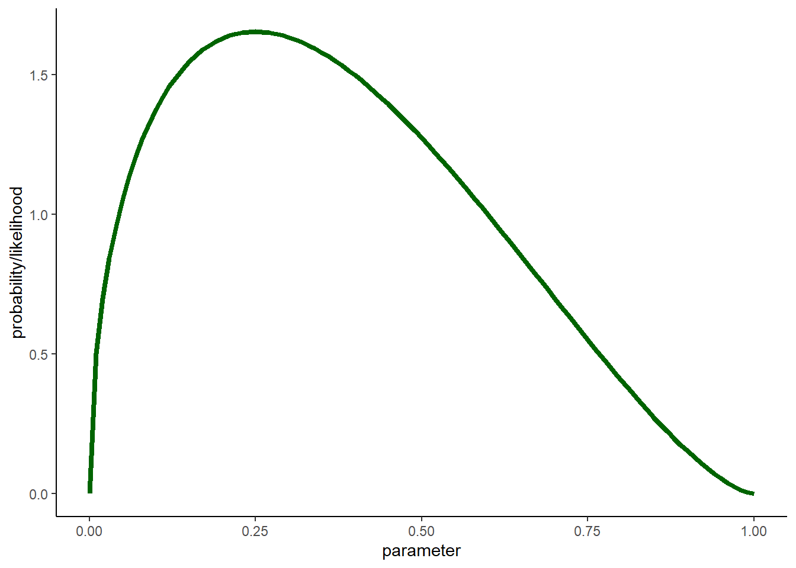
Where is the mode? Where is the mean?
# Compute and plot the mean and the mode of the distribution
posterior = function(p) dbeta(p,1.5,2.5)
mean <- integrate(function(p){posterior(p)*p},0,1)$value
mode <- optimize(posterior,c(0,1),maximum=T)$maximum
ggplot() +
xlim(0,1) +
stat_function(fun=dbeta,args = list(shape1 = 0.5+1, shape2 = 0.5+2),lwd=1.5,col="darkgreen") + # skewed posterior
geom_vline(xintercept=c(mean,mode),col=c("red","blue"),lwd=2,lty=2) +
labs(x="parameter",y="probability/likelihood") +
theme_classic()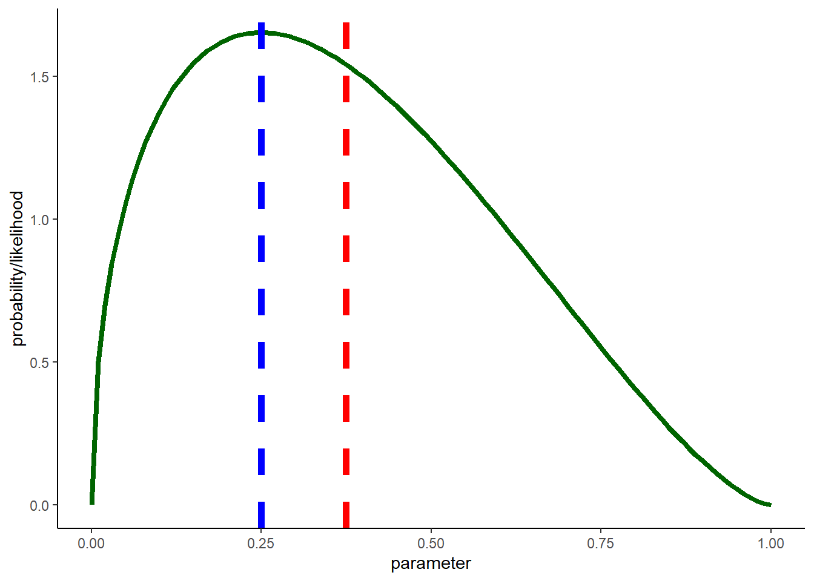
Why don’t we use the mean of the likelihood function in frequentist statistics?
In Bayesian analysis, why don’t we use the mode of the posterior distribution?
Bayesian parameter uncertainty
We often call Bayesian confidence intervals credible intervals to distinguish from their frequentist cousins. Bayesian (e.g., 95%) credible intervals can be interpreted in the way you probably have always wanted to interpret frequentist (95%) confidence intervals.
You are 95% sure that the parameter value is between the lower and upper bound!!!
Q: Why can’t we say this in a frequentist framework?
Let’s try this:
# A Bayesian confidence interval (95% credible interval) -------------------
credible.interval <- qbeta(c(0.025,0.975),1+3,1+(10-3)) # get the credible interval using the quantile method
ggplot() +
xlim(0,1) +
stat_function(fun=dbeta,args = list(shape1 = 1+3, shape2 = 1+(10-3)),lwd=1.5,col="darkgreen") +
geom_vline(xintercept=credible.interval,col="blue",lwd=1,lty=2) +
labs(x="p",y="probability/likelihood") +
theme_classic()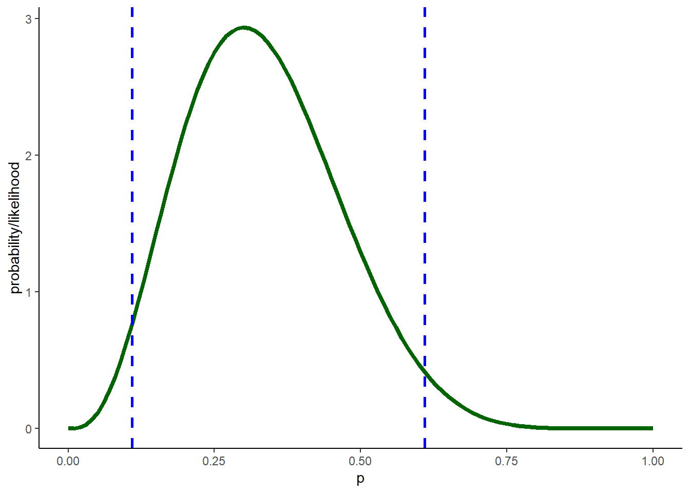
Highest Posterior Density (HPD) intervals
There are many possible Bayesian credible intervals, even assuming we want a 95% CI. That is, there are many intervals that enclose 95% of the posterior distribution. The Highest Posterior Density (HPD) interval is the one that is the shortest out of all possible intervals. This is the natural choice for a Bayesian CI since it represents the collection of the most likely values for the parameters - every point within the interval is more plausible than any point outside the interval.
NOTE: the HPD can be discontinuous for multimodal posterior distributions! In practice, we often use quantiles to define our credible intervals!
What if there is no nice easy conjugate prior?
One of the reasons Bayesian analysis was less common historically was that there were no mathematically straightforward ways to do the analysis. There still are not BUT we have fast computers and efficient computational algorithms. Basically, we can use computational methods to do Bayesian inference.
Let’s start with our grid-based brute-force method (not possible in high-dimensional systems):
The brute force method
For continuity we will continue the myxomatosis titer dataset. Recall that we are estimating the shape and rate parameters of the Gamma distribution that describes the virus titer in Australian rabbits for the highest-grade infections.
## Bayesian analysis without a conjugate prior
# Revisit the Myxomatosis example --------------------------
library(emdbook)
MyxDat <- MyxoTiter_sum
Myx <- subset(MyxDat,grade==1)
head(Myx)## grade day titer
## 1 1 2 5.207
## 2 1 2 5.734
## 3 1 2 6.613
## 4 1 3 5.997
## 5 1 3 6.612
## 6 1 3 6.810Recall the histogram looks like this:
hist(Myx$titer,freq=FALSE) # visualize the data, again!
And we are trying to fit a Gamma distribution to these data:
### Error is modeled as gamma distributed
ggplot(Myx, aes(x = titer)) +
geom_histogram(aes(y = after_stat(density)), binwidth = 0.5, fill = "lightblue", color = "black") +
stat_function(fun=dgamma,args = list(shape = 40, rate = 6),lwd=1,lty=2,col="darkgreen") +
labs(x = "Titer", y = "Density") +
theme_classic()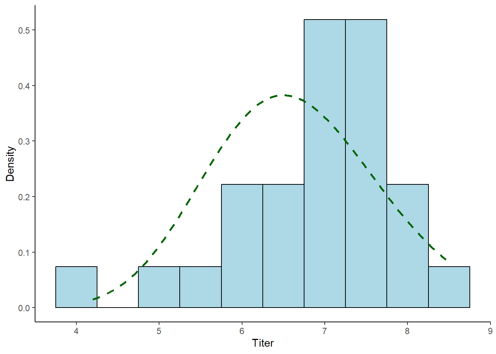
We already have a likelihood function for this problem! Note that we are now looking at raw likelihoods and not log likelihoods!
# recall our likelihood function for these data (not on log scale this time!)
lik <- function(pars){
prod(dgamma(Myx$titer,shape=pars['shape'],rate=pars['rate']))
}
pars <- c(shape=40,rate=6) # test the function
lik(pars)## [1] 1.488981e-17And we recall that the 2D likelihood surface looks something like this (looks a bit different without the log transform though!):
# define 2-D parameter space (in real probability scale)!
shapevec <- seq(0,150,length=100) # divide parameter space into tiny increments
ratevec <- seq(0.5,30,length=100)
parmsurface <- expand.grid(shapevec,ratevec)
colnames(parmsurface) <- c("shape","rate")
parmsurface$lik <- sapply(1:nrow(parmsurface), function(t) lik(unlist(parmsurface[t,1:2])) )
likplot_2D <- ggplot(parmsurface,mapping =aes(x=shape,y=rate)) + # Visualize the likelihood surface
geom_raster(aes(fill=lik)) +
scale_fill_gradient(limits=c(1e-70,1e-17))
likplot_2D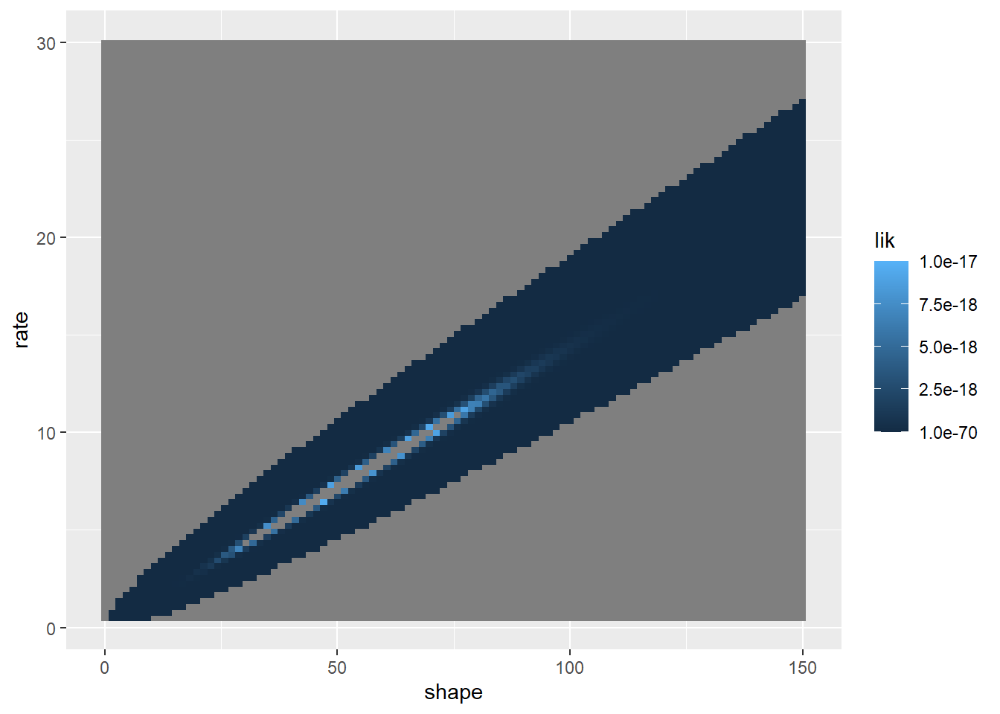
We’ll use this 2-D likelihood surface as a jumping-off point for a brute-force Bayesian solution to this problem!
First we set priors for the shape and scale parameters… For example, we could set uniform distributions for these parameters. For this example, let’s imagine a prior in which all pixels in the above image are equally likely and all pixels outside this range have posterior probability of zero:
# compute the area of each pixel in parameter space (for probability density computation)
pixelArea <- diff(range(shapevec))/100 * diff(range(ratevec))/100
npixels <- 100*100
# define the prior probability surface across this grid within parameter space
prior <- function(pars) replicate(nrow(pars),pixelArea/(npixels*pixelArea) ) # set as uniform across the support
parmsurface$prior <- prior(as.matrix(parmsurface[,c("shape","rate")]) )Now we have the raw information we need to apply Bayes’ rule!
# Apply Bayes Rule! -------------------
parmsurface$numer <- with(parmsurface, lik*prior ) # numerator of Bayes rule
denom <- sum(parmsurface$numer) # denominator of Bayes rule
parmsurface$post <- parmsurface$numer/denom # apply Bayes rule
# Visualize the 2-D posterior distribution
postplot_2D <- ggplot(parmsurface,mapping =aes(x=shape,y=rate)) + # Visualize the likelihood surface
geom_raster(aes(fill=post)) +
scale_fill_gradient(limits=c(1e-25,0.02562))
postplot_2D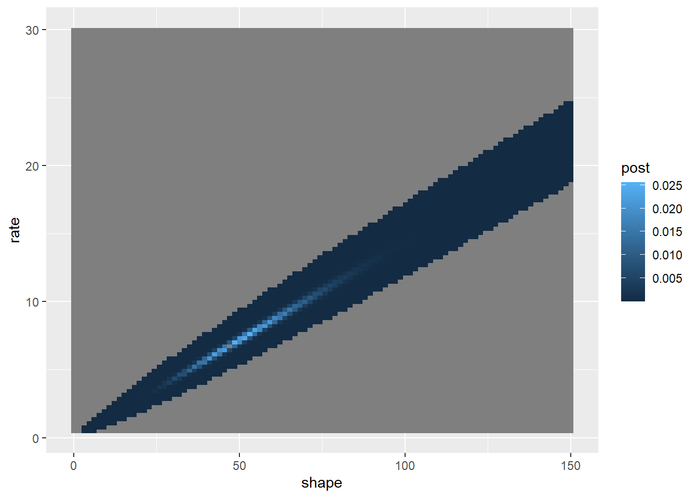
Now we can use this posterior distribution to get our point estimates and parameter uncertainty estimates. We could just take the 2d posterior distribution surface and draw the contour containing 95% of the probability density:
First let’s find the contour line below which only ~5% of the probability density is contained (this represents an HPD credible interval):
# find the contour that encloses approx. 95% of our degree of belief! ----------------
cntrconf <- function(c) with(parmsurface, sum(post[which(post>=c)]) )
find_cntr <- function(c,conf) (cntrconf(c)-conf)^2
c = optimize(find_cntr, interval=c(1e-10,0.02562),conf=0.95)$objective
c## [1] 6.824399e-06So the contour line at posterior probability 6.824e-06 encloses ~95% of the probability density
# Visualize the 2D credible region (HPD)
postplot_2D <- postplot_2D +
geom_contour(aes(z=post),breaks=6.824e-06 ,lwd=1.2)
postplot_2D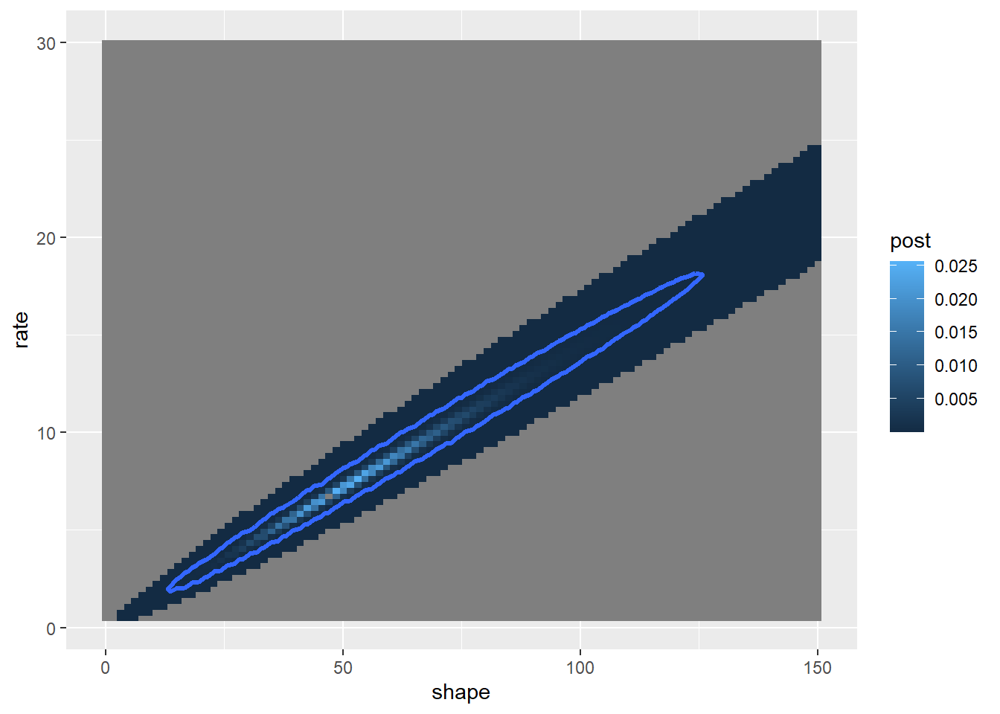
Where is our point estimate? Let’s find the posterior mean and mode!
# Visualize a point estimate
meanpars <- with(parmsurface, c(shape=sum(shape*post),rate=sum(rate*post) ) )
modepars <- unlist(parmsurface[which.max(parmsurface$post),c("shape","rate")] )
pts <- as.data.frame(rbind(meanpars,modepars)); pts$method=c("mean","mode")
postplot_2D + geom_point(data=pts,aes(x=shape,y=rate,col=method),size=3)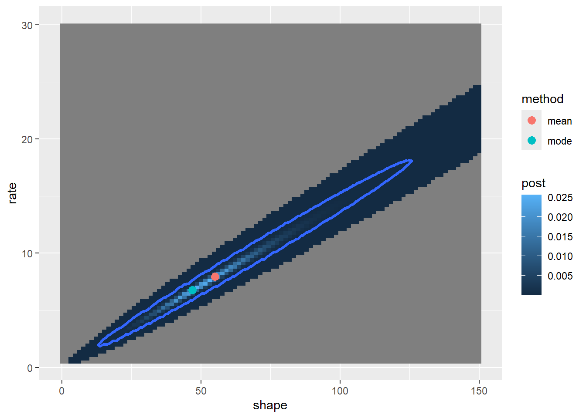
We can also plot out the marginal posterior distributions for the parameters separately. For example, the probability that the ‘shape’ parameter falls within a given range, regardless of the other variable:
library(cowplot)
shape_marginal = parmsurface |>
group_by(shape) |>
summarise(post = sum(post))
rate_marginal = parmsurface |>
group_by(rate) |>
summarise(post = sum(post))
# Plot out posterior distributions separately for each parameter -------------
g1 = ggplot(shape_marginal,aes(shape,post)) + geom_path(lwd=2) + theme_classic() + ylab("density")
g2 = ggplot(rate_marginal,aes(rate,post)) + geom_path(lwd=2) + theme_classic() + ylab("density")
# g1
cowplot::plot_grid(g1,g2)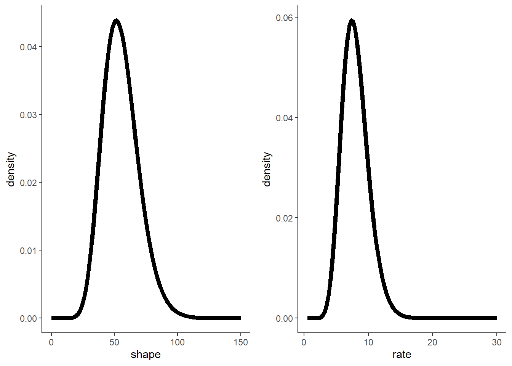
And from here we can compute the posterior mean and Bayesian credible intervals.
cdf_shape <- cumsum(shape_marginal$post)
cdf_rate <- cumsum(rate_marginal$post)
meanshape = with(shape_marginal, sum(shape*post) ) ; meanrate = with(rate_marginal, sum(rate*post) )
ci95shape = shapevec[c(tail(which(cdf_shape<0.025),1),tail(which(cdf_shape<0.975),1) )]
ci95rate = ratevec[c(tail(which(cdf_rate<0.025),1),tail(which(cdf_rate<0.975),1) )]
cis = rbind(ci95shape,ci95rate); colnames(cis) <- c("lb","ub")
stats = data.frame(parm=c("shape","rate"), mean=c(meanshape,meanrate))
stats = cbind(stats,cis )
stats## parm mean lb ub
## ci95shape shape 55.099134 28.787879 84.84848
## ci95rate rate 7.962967 4.075758 12.12121How do our Bayesian estimates compare with the maximum likelihood estimates?? (shape = 49.61 scale = 7.16)
We can also sample directly from this 2-D posterior distribution:
# Sample parameters from the joint posterior
SampleFromPosterior <- function(n){
samples <- sample(c(1:nrow(parmsurface)),size=n,replace=TRUE,prob=parmsurface$post)
parmsurface[samples,c("shape","rate")]
}
samples<-SampleFromPosterior(n=10000)
par(mfrow=c(2,2))
plot(ts(samples[,1]),xlab="sample",ylab="shape")
plot(ts(samples[,2]),xlab="sample",ylab="rate")
hist(samples[,1],40,xlab="shape",main="histogram of shape param")
hist(samples[,2],40,xlab="scale",main="histogram of rate param")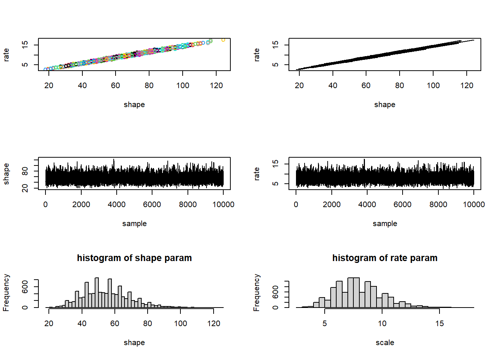
par(mfrow=c(1,1))Markov Chain Monte Carlo
The brute force method we used just now is nice for learning the concepts but it’s not useful in practice. In real life, we tend to harness algorithms known as Markov-Chain Monte Carlo (MCMC) to do Bayesian inference. This is the focus of the next lecture.